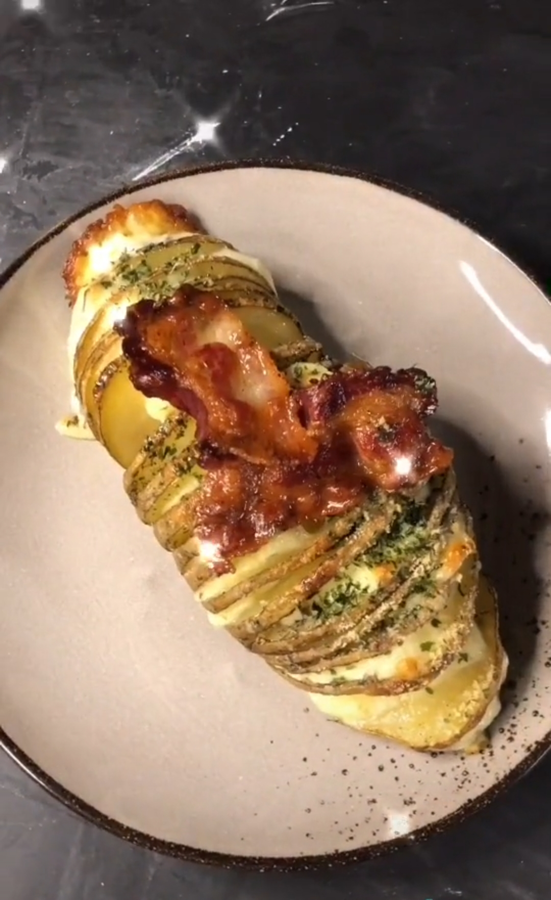

Bahan :
- Kentang
- Keju mozarella
- Bacon
- Olive oil
- Garam
- Bubuk bawang putih
- Lada hitam
- thyme
Tata cara :
- Cuci kentang sampai bersih.
- Siapkan sumpit utuk menahan bawah kentang.
- Iris kentang yang di tahan pakai sumpit agar tidak ke potong sampai bawah.
- Letak kentang di nampan oven yang udah di lapisi aluminium foil.
- Kasih oilve oil, garam, bubuk bawang putih, lada hitam dan thyme di atas kentang
- Oles menggunakan kuas agar semuanya merata.
- Panggang selama 30 menit dengan suhu 200 derajat celcius.
- Kalo udah tambah keju mozarella di setiap lipatan kentang dan bacon di sampingnya.
- Panggang lagi selama 30 menit.